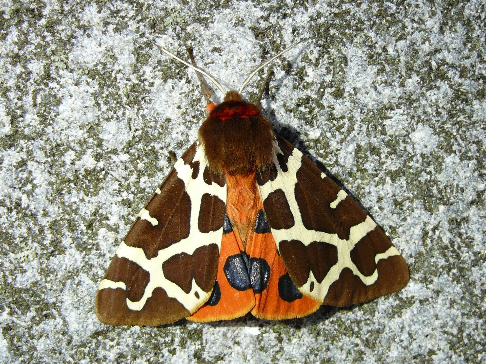

La audición también puede formar parte del camuflaje o del mimetismo. Algunas especies emiten sonidos que los ayudan a engañar a depredadores o a ocultarse dentro de su hábitat.
El sonido puede atraer, confundir o desorientar, y en algunos casos sirve para comunicarse sin ser detectados por otros animales.

Polilla tigre común

Saltamontes depredador manchado